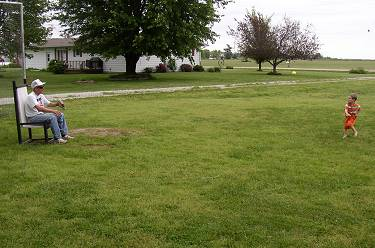
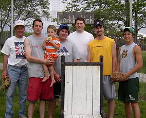
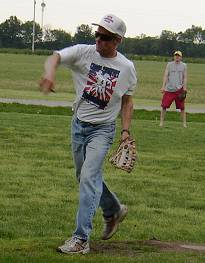
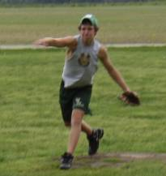
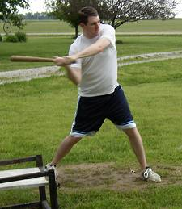
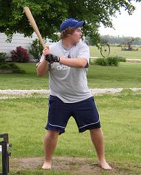
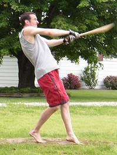
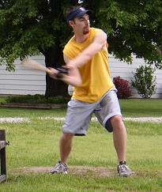
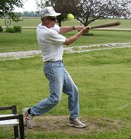
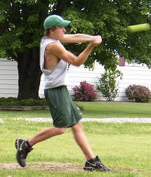

For the fourth time, three-year old Caleb Cork threw out the ceremonial first pitch on opening day. |

Opening Day players (from L to R): Tony Cork, Patrick Cork, Caleb Cork, Evan Woodard, Chris Cork, Aaron Zehr, Donnie Hackney. |

Tony Cork picked up the win by hurling a shutout on opening day. He allowed just two hits and struck out 5. |

Donnie Hackney took the loss in the opener allowing 6 runs - all in the third inning. |

Chris Cork led the way offensively going 6-for-14 with a homerun and 3 RBI. |

Evan Woodard was hitless, but had a game-high 2 outfield assists in defeat. |

Patrick Cork was 5-for-14 with a homerun and 3 RBI in the victory. |

Aaron Zehr relieved Donnie Hackney and threw 5 scoreless innings while striking out 3. |

Tony Cork had a 5-for-14 day at the plate to go along with his great outing on the mound. |

Donnie Hackney had the only two hits for his team in the game with a pair of singles as he went 2-for-10. |
|
|